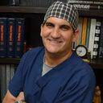

Wise Center for Plastic Surgery – Wayne Wayne, New Jersey 07470
Name: Wise Center for Plastic Surgery – Wayne
Display name: Wise Center for Plastic Surgery – Wayne
Mission: If you struggle with a facial condition that you feel affects your appearance, the Wise Center for Plastic Surgery delivers an array of groundbreaking treatments. Whether you are tired of seeing a double chin, acne scars, rosacea, dry skin, age spots, enlarged pores, or pigmentation issues, we have the technologies and treatments that produce real-world miracles.
Website: https://www.drwise.com/
Office hours: Mon: 9:00am – 5:00pm
Tue: 9:00am – 5:00pm
Wed: 9:00am – 5:00pm
Thu: 11:00am – 7:00pm
Fri: 9:00am – 5:00pm
Tue: 9:00am – 5:00pm
Wed: 9:00am – 5:00pm
Thu: 11:00am – 7:00pm
Fri: 9:00am – 5:00pm
Phone: (973) 447-8394
Twilio phone: (973) 447-8394
Address: 1680 Rte. 23, Ste. 120, Wayne, New Jersey, USA, 07470
City: Wayne
State: New Jersey
Country code: US
Postal code: 07470
Phone: (973) 658-4019
Country: USA
GPS coordinates on map: 40.9416262,-74.2698085
Treatments:
- Microdermabrasion
- Botox
- Cheek Lift
- Neck Lift
- Lifestyle Lift
- Juvederm
- Facelift
- Lower Facelift
- SMAS Facelift
- Restylane
- Radiesse
- Rhinoplasty
- Sculptra
- Cheek Augmentation
- Tattoo Removal
- Laser Hair Removal
- Laser Resurfacing
- Fraxel Laser
- Pulsed Dye Laser
- Chemical Peel
- Glycolic Peel
- Sclerotherapy
- TCA Peel
- Salicylic Peel
- Dermabrasion
- Body Wrap
- Facial Fat Transfer
- LED Light Therapy
- Eyelid Surgery
- Brow Lift
- Dermaplaning
- Hair Transplant
- Facial
- Nonsurgical Facelift
- Dysport
- Cosmelan
- Nonsurgical Nose Job
- Chin Implant
- Ear Surgery
- Retin-A
- Hyaluronidase
- Latisse
- Double Eyelid Surgery
- Lip Fillers
- Chin Liposuction
- Skin Rejuvenation
- Mini Facelift
- Scar Removal
- Vbeam
- Lip Lift
- Genioplasty
- Septoplasty
- Skin Tightening
- Hair Loss Treatment
- Dermal Fillers
- Fractional Laser
- CO2 Laser
- VI Peel
- Facial Reconstructive Surgery
- Belotero
- Xeomin
- CoolSculpting
- Ultherapy
- eMatrix
- Derma Roller
- Asclera
- Asian Rhinoplasty
- African American Rhinoplasty
- MiraDry
- Liquid Facelift
- Voluma
- FUE Hair Transplant
- NeoGraft
- PicoWay
- Volbella
- Deep Plane Facelift
- Restylane Silk
- Nonsurgical Neck Lift
- Microneedling
- PRP for Hair Loss
- Kybella
- Restylane Lyft
- Vollure
- Hand Rejuvenation
- HydraFacial
- Restylane Refyne
- Restylane Defyne
- CoolMini
- PRP Injections
- Rejuvapen
- Obagi Nu-Derm
- Emsculpt
- SkinCeuticals
- Subcision
- Micro Botox
- Botox for TMJ
- Beard Transplant
- Low-Level Laser Therapy
- Botox for Gummy Smile
- SkinPen
- Cryolipolysis
- Chin Filler
- Transgender Laser Hair Removal
- Skinbetter Science
- Botox for Hyperhidrosis
- Nonsurgical Butt Lift
- Microneedling RF
- Earfold
- PCA Skin Peel
- Morpheus8
- Neocutis
- Vampire Facial
- PlasmaPen
- CoolTone
- Nutrafol
- Aquagold
- Restylane Kysse
- RHA Collection Fillers
- Alarplasty
- Restylane Contour
- Cheek Fillers
- Mini Neck Lift
- Laser Scar Removal
- Upneeq
- Daxxify
- AviClear
RealSelf Info
Profile created: Jul 31, 2019
Profile modified: Apr 10, 2023
Business type: Practice
Review count: 489
Rating: 4.9
Rating time spent: 5
Rating answered questions: 5
Rating bedside manner: 5
Rating after care: 5
Rating payment process: 5
Rating wait times: 5
Rating courtesy: 5
Rating responsiveness: 5
RealSelf’s PRO: Yes
Realself network status: candidate
Doctors

Jeffrey B. Wise, MD, FACS
Name: Jeffrey B. Wise, MD, FACS
Statement: I specialize exclusively in facial plastic and reconstructive surgery. I take pride in creating the most natural looking results with the shortest recovery time possible. In an environment of open and honest communication, together we create a cohesive vision for a successful outcome.
Began aesthetic medicine in: 2006
Rating: 4.9
Staff
Mayra Crespo
Name: Mayra Crespo
Position: Nurse Practitioner
Biography: Holly joined Wise Center for Plastic Surgery in 2021. As a Licensed Esthetician, Holly brings with her 15 years of skincare experience and a passion for her craft, and coupled with her medical background, brings a unique perspective to her patient care. Staying on top of trends and educating herself on the latest developments in skincare, Holly assists each patient with a warm and caring approach to help them achieve their aesthetic goals by developing a personalized skincare program for optimal results. Holly specializes in HydraFacials, SaltFacials, customized facials, VI Peels, Enlighten Peels, among a variety of other customized treatments. Holly is also a certified CoolSculpting specialist. Holly is a proud mother of two boys and enjoys spending downtime with her family.
Holly Ruiz
Name: Holly Ruiz
Position: Aesthetician
Years experience: 16
Biography: Holly joined Wise Center for Plastic Surgery in 2021. As a Licensed Esthetician, Holly brings with her 15 years of skincare experience and a passion for her craft, and coupled with her medical background, brings a unique perspective to her patient care. Staying on top of trends and educating herself on the latest developments in skincare, Holly assists each patient with a warm and caring approach to help them achieve their aesthetic goals by developing a personalized skincare program for optimal results. Holly specializes in HydraFacials, SaltFacials, customized facials, VI Peels, Enlighten Peels, among a variety of other customized treatments. Holly is also a certified CoolSculpting specialist. Holly is a proud mother of two boys and enjoys spending downtime with her family.
Anthony Orlando
Name: Anthony Orlando
Position: Practice Manager
Years experience: 20
Biography: Anthony has recently joined the Wise Center for Plastic Surgery and comes to the Practice with experience in HR leadership and guidance, employee assistance and training, recruitment and retention, and organizational/operational planning. Anthony has extensive background and experience working with many prominent physician practices and hospitals in the tri-state area and enjoys using his creativity in the work place. Anthony is also a professor of literature and writing and loves teaching in academia. He enjoys spending time with his family, skiing in the winter, and relaxing on the beach in the summer.
Diane Lyons
Name: Diane Lyons
Position: Patient Care Coordinator
Years experience: 17
Biography: Diane has over 15 years of experience in patient services, facial plastic surgery and non-surgical rejuvenation. Having worked with prominent plastic surgeons throughout Manhattan, Diane brings unparalleled knowledge and passion to the Wise Center. Diane has worked with Dr. Wise for the past 8 years and has helped make the Wise Center the prestigious Practice that it is today. Known for her compassionate understanding, Diane helps guide patients through the facial rejuvenation decision making process to ensure their aesthetic concerns and desires are achieved. She ensures the comfort of our Patients every step of the way, from the initial phone call, to the surgery day, and beyond. In her spare time, Diane loves to travel and explore new places; when she is not traveling she enjoys spending time with her two dogs.
Kara Russo
Name: Kara Russo
Position: Patient Care Coordinator
Years experience: 9
Biography: Kara joins the Wise Team with over 20 years of experience in the medical field with 9 years exclusively in cosmetic plastic surgery. Kara specializes in hair restoration and has taken a special interest in stem cell therapies for hair regrowth, such as Platelet Rich Plasma (PRP) and Exosomes. Kara brings positive energy, exceptional customer service and kindness to the care of each of her hair restoration patients, ensuring their experience is pleasant every step of the way, from the consultation room to post-procedure care. Kara also holds numerous certifications for aesthetic treatments and has a well-rounded understanding of all aspects of surgical and non-invasive procedures. In her leisure time, Kara enjoys spending time outdoors and hanging out with her four-legged sidekick, Gunnar.
Name: Nicole Calicchio
Position: Marketing Manager
Biography: .
Julie Albanese
Name: Julie Albanese
Position: Staff
Years experience: 15
Biography: Holly joined Wise Center for Plastic Surgery in 2021. As a Licensed Esthetician, Holly brings with her 15 years of skincare experience and a passion for her craft, and coupled with her medical background, brings a unique perspective to her patient care. Staying on top of trends and educating herself on the latest developments in skincare, Holly assists each patient with a warm and caring approach to help them achieve their aesthetic goals by developing a personalized skincare program for optimal results. Holly specializes in HydraFacials, SaltFacials, customized facials, VI Peels, Enlighten Peels, among a variety of other customized treatments. Holly is also a certified CoolSculpting specialist. Holly is a proud mother of two boys and enjoys spending downtime with her family.
Practice’s answers
Question
Answer Header & Date
Answer Snippet
My neck and chest area where I put the product is very red. It’s been over 7 days. Is this no
Don’t recommend doing VI Peels at home
May 19, 2021
May 19, 2021
Your skin could be reacting to other skin care products you are using, not tolerating the peel, or there could be something else going on — best course of action would be to go see a dermatologist.
Am I a candidate for CoolSculpting for my hip dips?
Coolsculpting
Dec 4, 2020
Dec 4, 2020
Hello Coolsculpting is a great way to non-surgically remove fat. So if you are looking for a non-surgical way to help sculpt your body then yes coolsculpting can work for you. By viewing your photos you maybe a candidate for both flanks and saddle bags. A consultation is advised to make sure its the right type of fat. They will do a pinch assessment during a consultation and will come up with a treatment plan for you. I hope this helped!
I am currently getting eMatrix treatments to improve skin texture, should I consider VI Peel?
EMatrix / VI Peel Combo
Nov 11, 2020
Nov 11, 2020
Hello! We do both treatments in our office. The combination of the two generally will give better results. Ematrix is a combination of radio frequency and micro needling. This will target texture, fine lines, large pores and some skin tightening. If you do the Vi peel either 30 days before or after the treatment it will only benefit you with better results. We would recommend the VI original or the VI advanced! Consultation is always advised!
Can CoolSculpting help my abdomen that also has visceral fat?
Which fat does Coolsculpting treat!
Oct 13, 2020
Oct 13, 2020
Hello the answer to this question which is a good one is coolsculpting only works on fiborous fat. That subcutaneous fat which is easier to spot with the naked eye is the treatable fat for coolsculpting. This type of adipose can accumulate anywhere on the body and appears soft and fluffy. If your fat is strictly Visceral fat it will not work with coolsculpting. Visceral fat is strictly diet and lifestyle.
A tiny capillary showed up out of nowhere on my cheek. Since I don’t have the funds for laser
Broken Cappillaries
Jun 30, 2020
Jun 30, 2020
Hello to answer your question yes lasers are the way to go for this. However if you don’t have the funds its understandable. We carry a treatment cream called Red Vein from DMK Skincare. This cream acts as a vasodilator to increase blood flow. It contains inhibitors to reduce vein redness and dark circles. It will strengthen capillary walls and supports the skins barrier function. This is a great cream to use to help correct them until you can do the laser treatments. I hope this helps!
Latest Before And After Photos
- 19 Year Old Man Treated With AviClear By Doctor Wise Center For Plastic Surgery – Wayne
- Dr. Wise Center For Plastic Surgery – Wayne 22 Year Old Man Treated With AviClear
- 21 Year Old Man Treated With AviClear With Dr Wise Center For Plastic Surgery – Wayne
Last updated on 12/06/2023